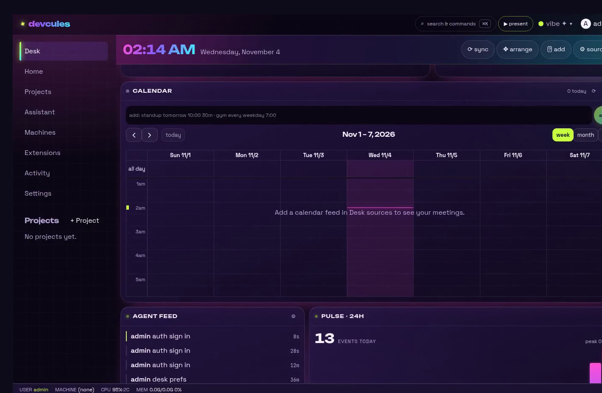
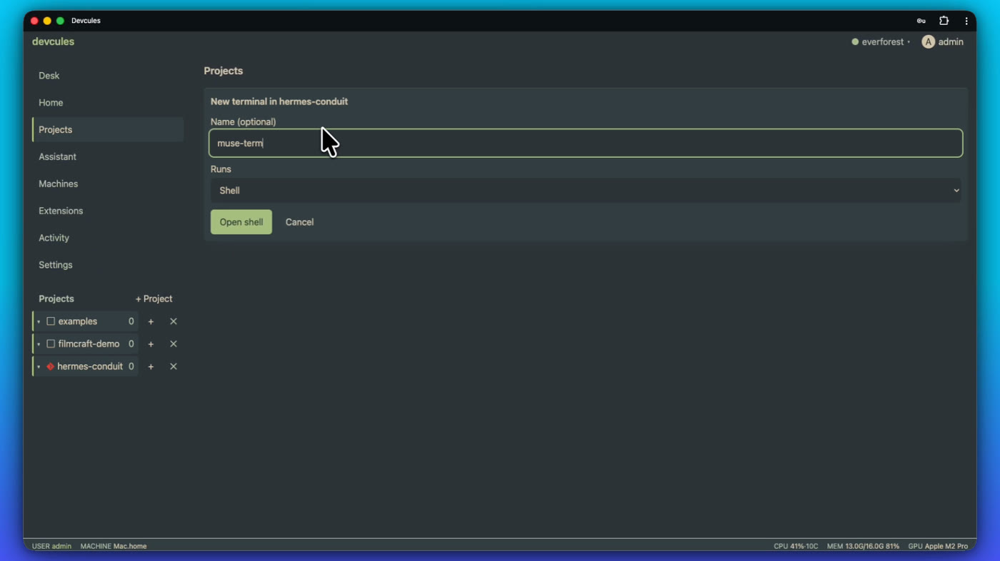
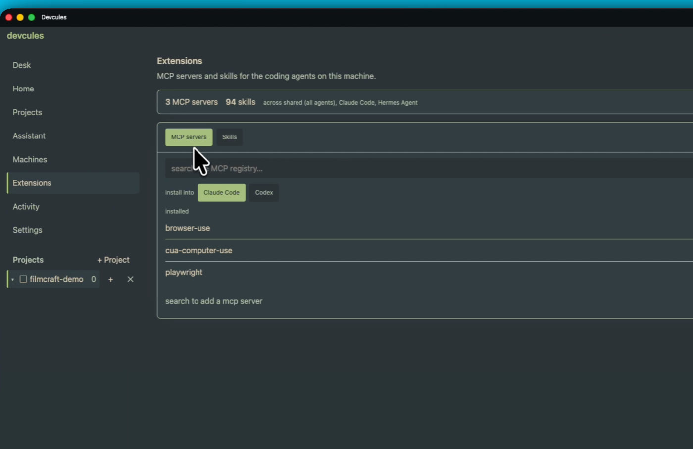
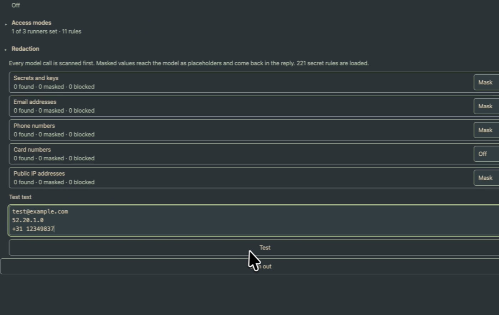
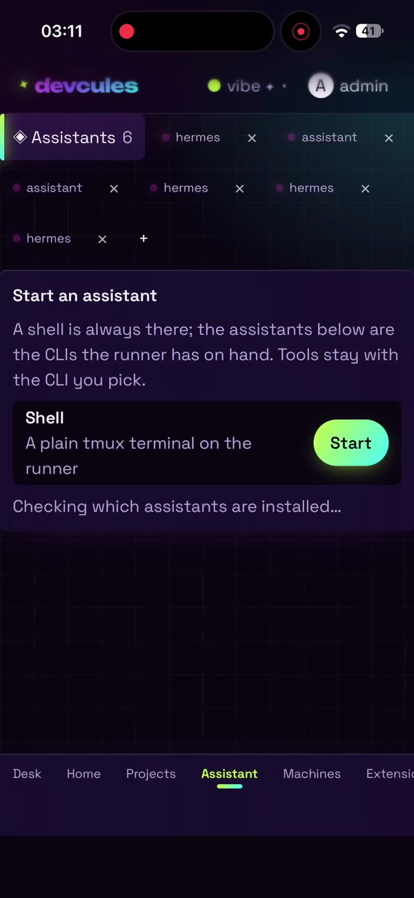
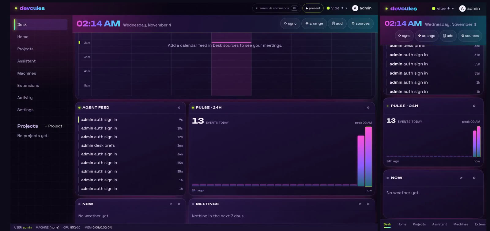
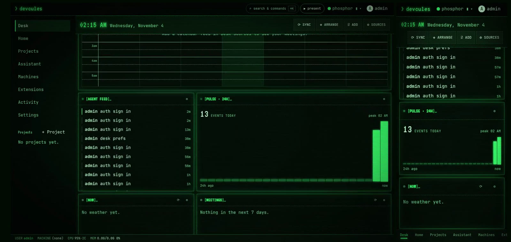
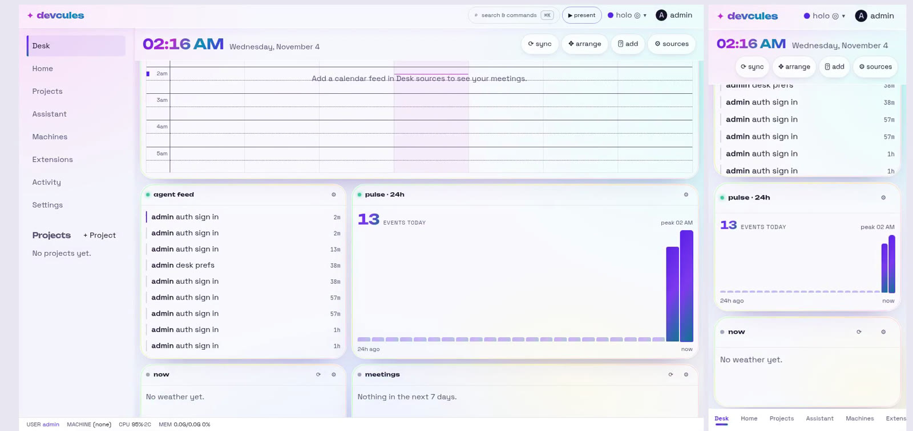

Every developer is unique.
We each have a favorite coding agent, ticket board, calendar and news feed, so one-size-fits-all tools never quite fit. Devcules, named after Hercules, is a strong skeleton you tune to fit you.
A harness that's yours
Your agents, providers, panels and theme. Your own agent can even reshape Devcules itself.
Any device
The same desk and the same live terminals follow you from laptop to phone to iPad, even a real terminal on your phone.
A sandbox per terminal
Every terminal opens in a project on the machine you pick: this computer, a second box, or a container.
Less switching
Calendar, tickets, approvals, agent feed and terminals on one desk, so you stop hopping between windows.
Every panel is yours to shape.
Calendar, meetings, tickets, news searches, a focus timer, quick links and a scratchpad. Add, move, resize or remove any panel, and pick each panel's source.
- Tickets from Jira, Asana or Linear
- A live agent feed and a 24 hour pulse
- Weather, meetings and quick links at a glance

Open a terminal anywhere.
Add a computer with one line and it enrols over your tailnet. Open a project on any machine and start a terminal with Muse Code, Claude Code, Codex, or an assistant like Hermes.
- tmux is the source of truth, so sessions survive a closed tab
- Host, second machine or container, side by side
- Switch models and providers per launch

The MCP registry, built in.
Browse the MCP servers and skills your agents share, then search the registry and install into Claude Code or Codex, right from the browser.

Nothing leaks, nothing is public.
Passkey sign-in, access only over your own tailnet, and write-only secrets in the vault. Redaction masks keys, emails, phone numbers and IP addresses before any model call leaves the machine.
- No public ports, ever
- Risky agent steps wait for your approval
- Every action lands in the audit log

Your desk, on any device.
Devcules installs as an app on your phone or iPad. Approve a step with Face ID, check the agent feed, or drop into your remote terminal from the couch.
Tickle your builder mind anywhere.

Every personality has a theme.
Pick one, or ask the assistant to make one for you.



One command on your computer.
It runs serve and its own host runner in one process on 127.0.0.1:7659, sets no environment variable and asks nothing. The first start prints a bootstrap admin password.
Install and run
Open the desk, sign in with the printed password, then add a passkey.
$ go install github.com/devcules/devcules/cmd/devcules@latest
$ devculesCompose up
Serve, a runner rooted at your ~/code, and the vault, all in one volume.
$ docker compose -f deploy/compose.yaml up -d --waitJoin your tailnet
The phone reaches the desk over your tailnet, never a public port.
$ echo "TS_AUTHKEY=tskey-auth-…" > .env
$ docker compose -f deploy/compose.yaml \
--profile tailscale up -d --wait
# https://devcules.<your-tailnet>.ts.netMore machines are one click away in Machines → Add a computer. See the deploy guide for environment, hardening and limits.
Build it with us.
Devcules is open source and growing one module at a time. Issues, ideas and pull requests are all welcome.